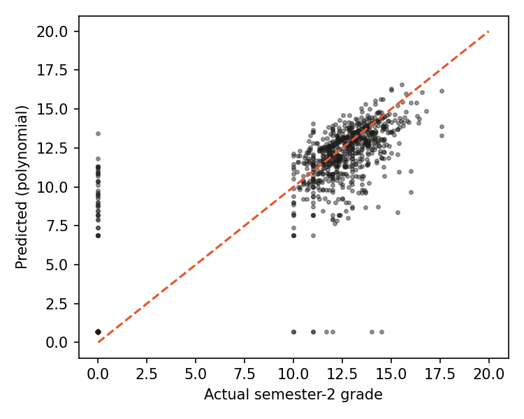

What past students tell us
Patterns from thousands of past student records: who dropped out, and what they had in common.
About one in three students in these records left before finishing.
Warning signs to watch for.
Dropout rate for each group, compared side by side.
Dropout rate by subjects passed in semester 1
The first semester is the clearest early signal.
Takeaway: students who pass fewer than 3 subjects in their first semester mostly drop out.
Most linked to dropping out
Orange goes with more dropout, dark with less.
Family and background matter too.
Dropout rate for each group, from all past students. Red bars are clearly above the average of .
Dropout rate by course
Some courses lose far more students than others.
Is the difference real?
Chi-square test for each factor. p below 0.05 means the difference is very unlikely to be chance. Cramér's V (V) shows how strong the link is (0 = none, 0.1 small, 0.3 medium). Nationality and special needs show no real difference.
Three kinds of students.
Grouping students by how similar their records are reveals three clear profiles.
Semester 1 predicts semester 2.
So support can start right after the first semester.
of the differences in semester-2 grades come from semester-1 results alone.
grade points (out of 20) between predicted and actual semester-2 grades.
Predicted vs. actual semester-2 grade
Dots near the line were predicted well.
